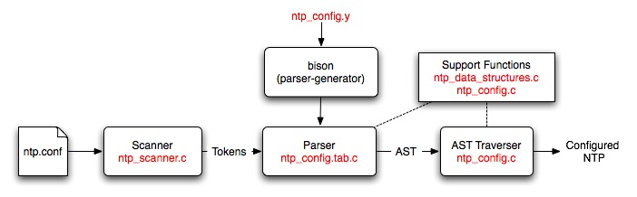

Racoon is shooting configuration bugs.
Last update: 4-Oct-2010 05:13 UTC
The NTP configuration process is driven by a phrase-structure grammar which is used to specify the format of the configuration commands and the actions needed to build an abstract syntax tree (AST). The grammar is fed to a parser generator (Bison) which produces a parser for the configuration file.
The generated parser is used to parse an NTP configuration file and check it for syntax and semantic errors. The result of the parse is an AST, which contains a representation of the various commands and options. This AST is then traversed to set up the NTP daemon to the correct configuration.
This document is intended for developers who wish to modify the configuration code and/or add configuration commands and options. It contains a description of the files used in the configuration process as well as guidelines on how to construct them.
A brief description of the files used by the configuration code is given below:
| File | Description |
|---|---|
| ntp_config.y | This file is a Bison source file that contains the phrase-structure grammar and the actions that need to be performed to generate an AST. |
| ntp_config.c | This file contains the major chunk of the configuration code. It contains all the functions that are called for building the AST as well as the functions that are needed for traversing the AST. |
| ntp_config.h | This file is the header file for ntp_config.c. It mainly contains the structure definitions needed to build the AST. |
| ntp_scanner.c | This file contains the code for a simple lexical analyzer. This file is directly included into the ntp_config.c file since this code is only used by the configuration code. The most important function in this file is yylex, which is called by the generated parser to get the next token on the input line. |
| ntp_data_structures.c | This file contains a generic implementation of a priority queue and a simple queue. This code can be used to create a queue for any structure. |
| ntp_data_structures.h | This header file contains the structure declarations and function prototypes needed to use the data structures defined in ntp_data_structures.c. This file forms the public interface of the data structures. |
| ntp_config.tab.c | This file is generated by Bison from the ntp_config.y file. This file is also included directly into the configuration code. |
A high-level description of the configuration process showing where all the files fit in is given below:

The scanner reads in an NTP configuration file and converts it into tokens. The Bison generated parser reads these tokens and converts them into an AST. The AST traverser consists of a set of functions that configure parts of NTP on the basis of what is on the tree. A more detailed description of these parts and the files used is given below:
All the terminal symbols (also known as tokens) have to be declared in the prologue section. Note that terminals and non-terminals may have values associated with them and these values have types. (More on this later). An unnamed union has to be declared with all the possible types at the start of the prologue section. For example, we declare the following union at the start of the ntp_config.y file:
%union {
char *String;
double Double;
int Integer;
void *VoidPtr;
queue *Queue;
struct attr_val *Attr_val;
struct address_node *Address_node;
struct setvar_node *Set_var;
/* Simulation types */
server_info *Sim_server;
script_info *Sim_script;
}
Some tokens may not have any types. For example, tokens that correspond to reserved words do not usually have types as they simply indicate that a reserved word has been read in the input file. Such tokens have to be declared as follows:
%token T_Discard
%token T_Dispersion
Other tokens do have types. For example, a T_Double token is returned by the scanner whenever it sees a floating-point double in the configuration file. The value associated with the token is the actual number that was read in the configuration file and its type (after conversion) is double. Hence, the token T_Double will have to be declared as follows in the prologue of ntp_config.y file:
%token <Double> T_Double
Note that the declaration given in the angled brackets is not double but Double, which is the name of the variable given in the %union {} declaration above.
Finally, non-terminal symbols may also have values associated with them, which have types. This is because Bison allows non-terminal symbols to have actions associated with them. Actions may be thought of as small functions which get executed whenever the RHS of a non-terminal is detected. The return values of these functions are the values associated with the non-terminals. The types of the non-terminals are specified with a %type declaration as shown below:
%type <Queue> address_list
%type <Integer> boolean
The %type declaration may be omitted for non-terminals that do not return any value and do not have type information associated with them.
The rule section only consists of phrase-structure grammar rules. Each rule typically has the following format:
LHS : RHS [{ Actions }]
;
where LHS consists of a single non-terminal symbol and the RHS consists of one or more terminal and non-terminal symbols. The Actions are optional and may consist of any number of arbitrary C statements. Note that Bison can only process LALR(1) grammars, which imposes additional restrictions on the kind of rules that can be specified. Examples of rules are shown below:
orphan_mode_command
: T_Tos tos_option_list
{ append_queue(my_config.orphan_cmds, $2); }
;
tos_option_list
: tos_option_list tos_option { $$ = enqueue($1, $2); }
| tos_option { $$ = enqueue_in_new_queue($1); }
;
The $n notation, where n is an integer, is used to refer to the value of a terminal or non-terminal symbol. All terminals and non-terminal symbols within a particular rule are numbered (starting from 1) according to the order in which they appear within the RHS of a rule. $$ is used to refer to the value of the LHS terminal symbol - it is used to return a value for the non-terminal symbol specified in the LHS of the rule.
Bison needs to be invoked in order to convert the ntp_config.y file into a C source file. To invoke Bison, simply enter the command:
bison ntp_config.y
at the command prompt. If no errors are detected, an ntp_config.tab.c file will be generated by default. This generated file can be directly included into the ntp_config.c file.
If Bison report shift-reduce errors or reduce-reduce errors, it means that the grammar specified using the rules in not LALR(1). To debug such a grammar, invoke Bison with a -v switch, as shown below. This will generate a ntp_config.output file, which will contain a description of the generated state machine, together with a list of states that have shift-reduce/reduce-reduce conflicts. You can then change the rules to remove such conflicts.
bison -v ntp_config.y
For more information, refer to the Bison manual.
ntp_config.c
This file contains the major chunk of the configuration code including all the support functions needed for building and traversing the ASTs. As such, most of the functions in this file can be divided into two groups:
The following steps may be used to add a new configuration command to the NTP reference implementation: